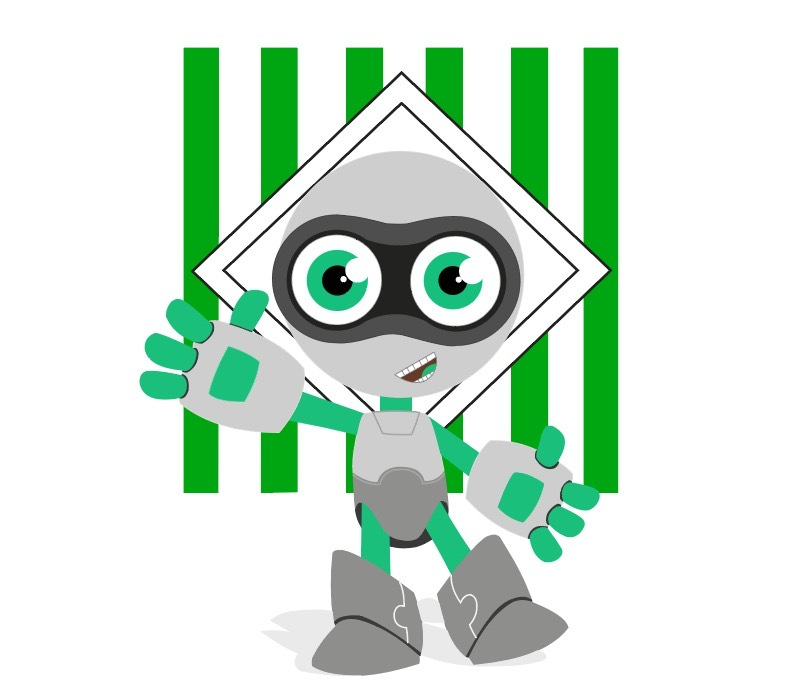

Reporte de Incidencias Hernán Ocazionez (R.I.H.O).
Optimización operativa para Hernán Ocazionez Y CIA SAS. RIHO centraliza la inteligencia técnica para reducir el MTTR.

"Sistemas optimizados, procesos fluidos."
Arquitectura Robusta
Persistencia crítica de datos con procedimientos almacenados para garantizar integridad en cada transacción.
Lógica centralizada para el seguimiento, actualización de tickets y administración avanzada de credenciales.
Dashboards interactivos integrados con Chart.js para el análisis de métricas de rendimiento por sede.
Autores del Proyecto
Juan Esteban Ospina Zapata
Técnico en Análisis y Desarrollo de Software
Especialista en integración de bases de datos relacionales y optimización de procesos Backend. Líder en la implementación de la lógica core bajo SQL Server para RIHO.
Jeronimo Mesa Carvajal
Software Development Engineer
Enfocado en la experiencia de usuario y la arquitectura de módulos administrativos. Responsable de la escalabilidad de las vistas y la gestión de reportes técnicos.
Seguridad de Grado Corporativo
Control absoluto sobre los activos digitales de Hernán Ocazionez Y CIA SAS mediante auditoría de accesos y roles jerárquicos.